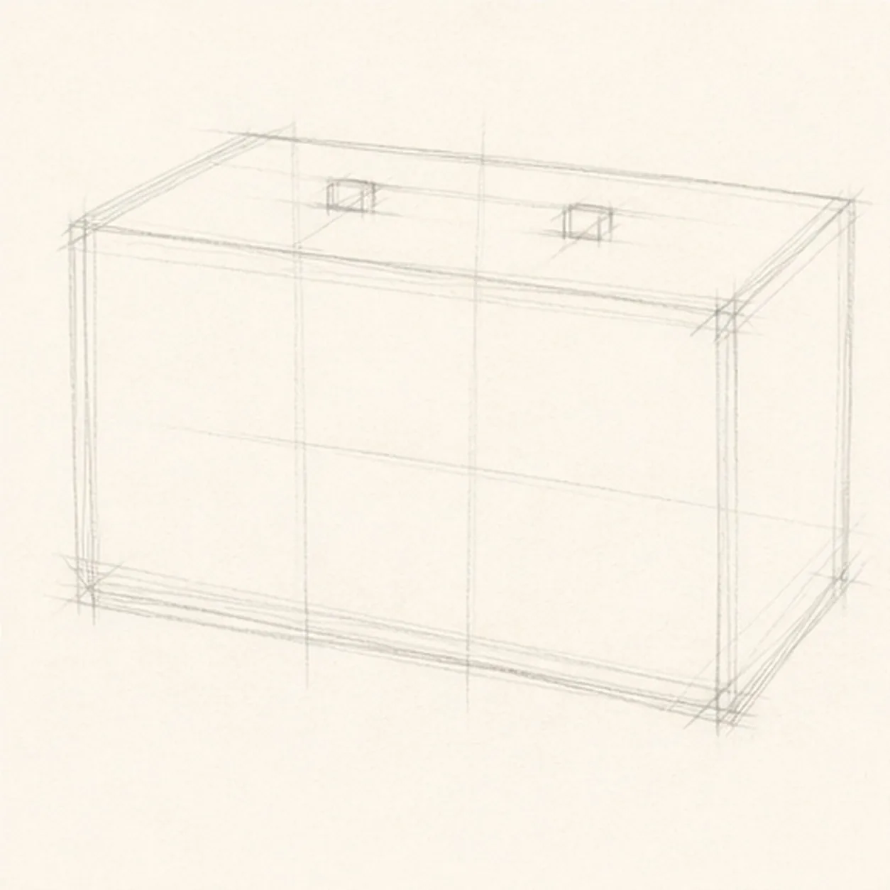
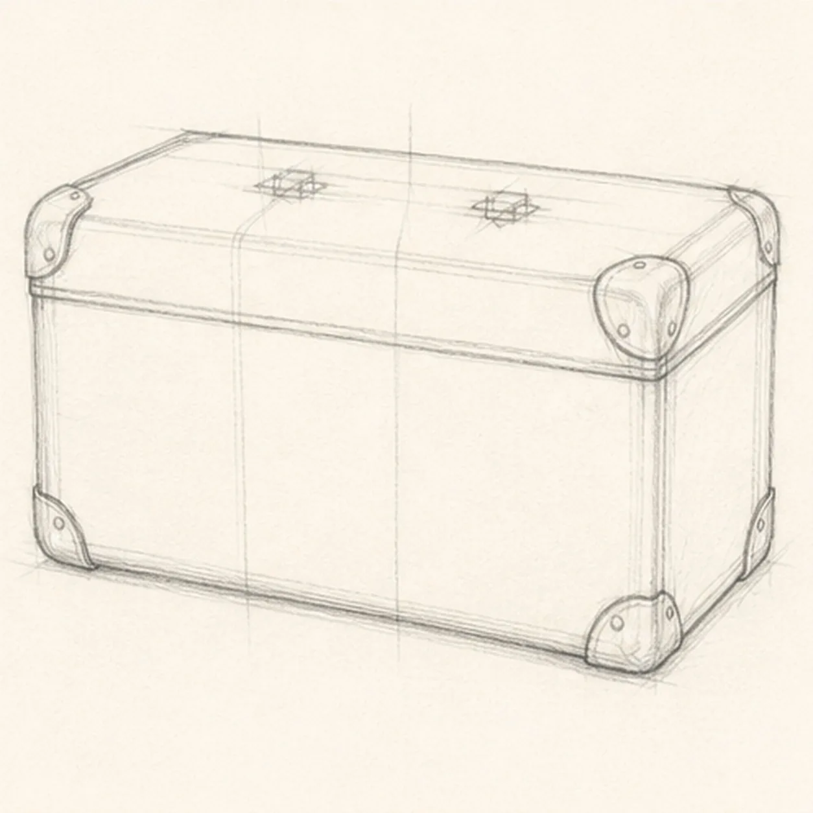
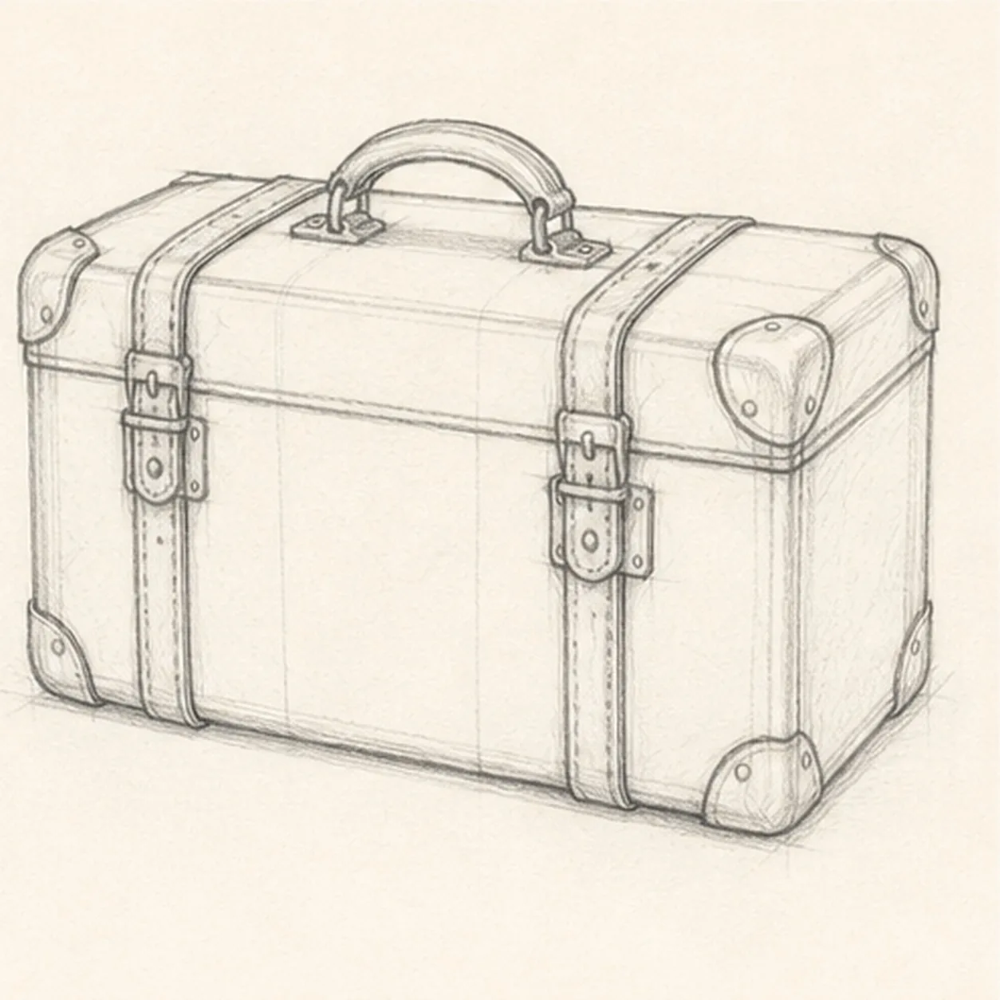
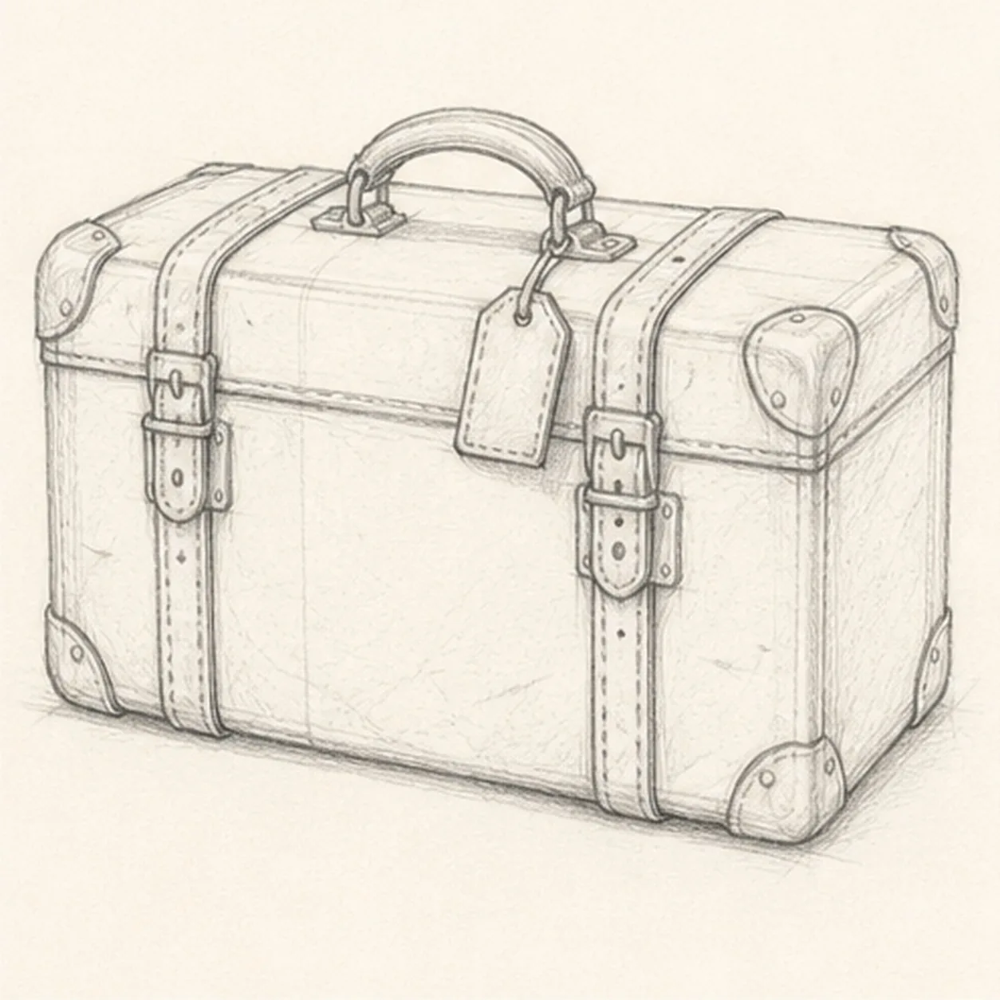
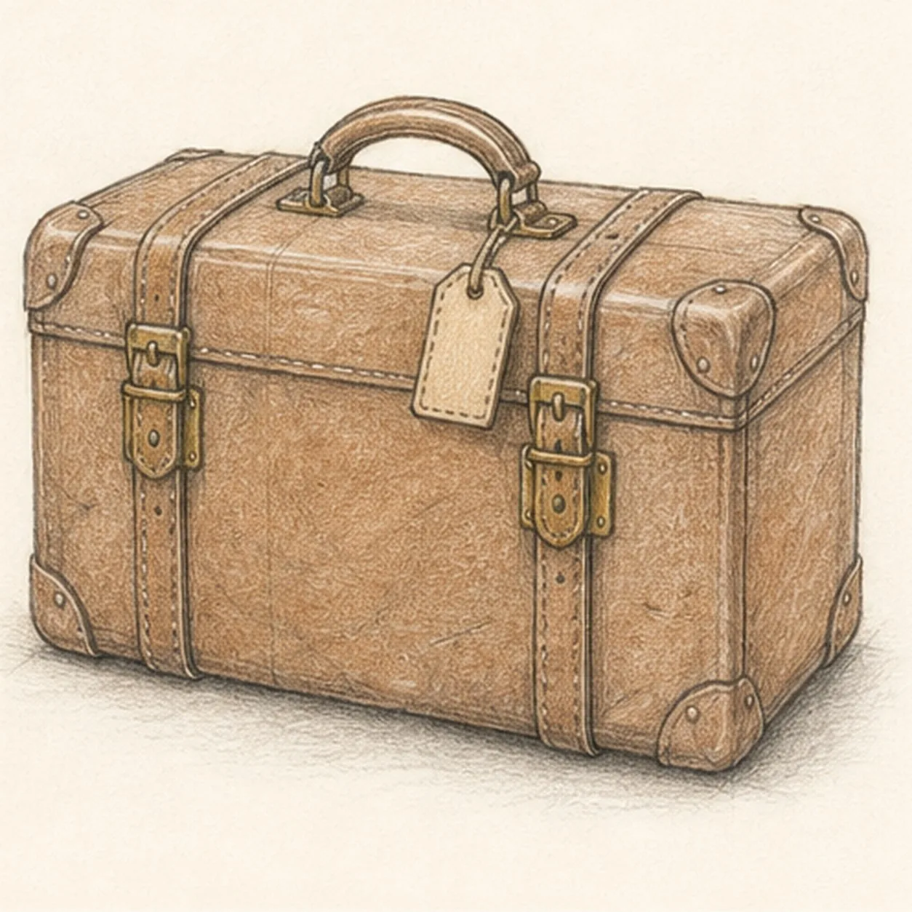

From the archive
Let's draw a vintage travel suitcase
Treat this as one small practice round: build the subject lightly, notice the shapes, then darken only the lines that help the finished sketch.
-
01

Block the travel case
Draw a light shallow three-quarter box with visible front, top, and right-side planes, then add center guides and two small handle anchors.
Sketch tip: Compare the three receding top edges before darkening anything. They do not need perfect perspective, but they should all aim toward the same quiet direction.
-
02

Round the leather shell
Soften the box into a rounded case, draw the lid seam, and add six visible reinforced corner caps without changing the perspective.
Sketch tip: Round each corner inside the original box instead of expanding the case. Use the lid seam to check that the front and side planes still agree.
-
03

Fit the handle and straps
Add the centered arched handle, two vertical leather straps, and two aligned latch assemblies to the established case planes.
Sketch tip: Mark both strap paths lightly before drawing either buckle. Compare their spacing from the center so the hardware feels attached to one case, not floating on top.
-
04

Add the travel details
Hang one small blank luggage tag from the handle, then add simple buckle details, short stitch marks, and a few leather creases.
Sketch tip: Keep the tag completely text-free and break any rear line where the tag or strap overlaps it. You can vary the crease rhythm while leaving the hardware clear.
-
05

Shade the worn leather
Add warm brown pencil to the established leather, pale ochre to the hardware, restrained graphite wear along existing edges, and one soft ground shadow.
Sketch tip: Pull the brown strokes along each case plane and leave narrow paper highlights near the rounded edges. Build the worn look with two light passes instead of pressing hard.
-
06
Finish the suitcase sketch
Strengthen the keeper contours and clarify the established shell, seam, handle, straps, hardware, blank tag, stitching, leather color, wear, and shadow.
Sketch tip: Check that both straps remain aligned and the tag stays blank, then stop. Passports, maps, destination labels, clothing, and a station scene are not needed.